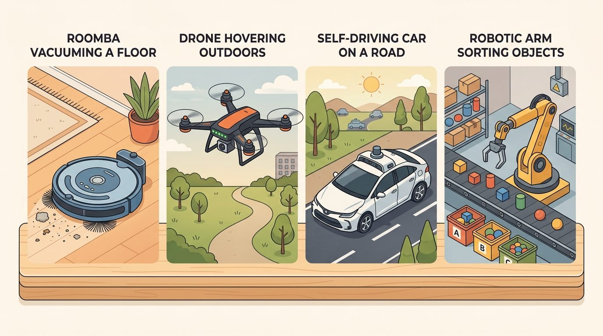

"The loop is shared. The body sets the clock and the price of being wrong."
Section 1.6

This section applies the sense-update-act loop introduced in section 1.2 and the observation and action space notation from section 1.3; reviewing those two sections first will make the parameter comparisons here concrete. The six embodiment profiles are extended in Part IV (navigation stack for vacuums and vehicles, sections 30.1 and 54.1), Part V (manipulation and legged locomotion, sections 42.1 and 45.3), and Part III (reinforcement learning for game agents, section 14.1). Readers already comfortable mapping a physical system to its control rate and failure cost can skip ahead to section 2.1, where the agent-environment interface formalizes these ideas.
A robot vacuum bumbling into a chair costs nothing. An autonomous vehicle that misjudges a gap at 60 mph cannot undo that choice. Both run the identical sense-update-act loop, yet one wrong step costs a dollar and the other a life. As of 2024-2025, every domain of embodied AI, from warehouse manipulators to humanoid assistants, is colliding with that gap: the loop is the same, but the body sets the stakes. Six real systems are compared here along the axes that actually differ: sensing modality, action dimensionality, control rate, partial observability, horizon length, and failure cost. By the end you will be able to read any new embodiment and immediately predict which algorithmic assumptions hold and which ones silently break.
A robot vacuum and a self-driving car run byte-for-byte the same control loop, yet swapping one controller for the other would be catastrophic: the difference lives entirely in six numbers attached to each body. Reuse the closed loop of Section 1.2 and attach to each body the parameters that the loop does not fix on its own. As Figure 1.6 shows, the loop structure stays fixed while the time constant $\Delta t$ and the failure cost are what move from one body to the next. A useful summary is the tuple $E=(\mathcal{O},\mathcal{A},\Delta t,k,H,\kappa)$: the observation space $\mathcal{O}$ (sensing modality), the action space $\mathcal{A}$ and its units, the control period $\Delta t$ with rate $1/\Delta t$, the degree of partial observability $k$ (how far the true state is from what a single observation reveals), the episode horizon $H$, and the failure cost $\kappa$ (how expensive and how reversible the worst routine mistake is). The policy class can be identical across two bodies; what differs is this coordinate vector. Walk the six examples and read off each coordinate concretely.
The drone and vehicle examples below rely on the partial-observability coordinate $k$ before it has been defined in detail; the next two paragraphs supply that definition first.
Partial observability ($k$) matters because a robot that cannot separate its true state from similar states cannot guarantee safe action. When a drone infers its pose from noisy IMU integration rather than reading it directly, accumulated drift can, in practice, place the aircraft metres from where the policy believes it is, turning a correct-looking command into a collision. High $k$ forces the agent to maintain a belief state over possible states instead of reacting to a single observation, adding compute to every sensing cycle.
Mechanically, $k$ quantifies the gap by asking: given observation $o_t$, how many distinct true states $s_t$ are consistent with it? A fully observable system has $k=0$: one observation pins one state. A SLAM-dependent (Simultaneous Localization and Mapping) mobile robot has $k>0$ because wheel slip and sensor noise mean the map posterior spans many poses; the agent must run a filter (particle filter, EKF, where the EKF is the Extended Kalman Filter that linearizes the motion and sensor models around the current estimate, or neural state estimator) to collapse that distribution before selecting an action, adding latency to each loop iteration.
Think of a cook tasting a sauce with eyes closed: the single sensation of "too salty" is consistent with dozens of true states, including too little water, too much stock reduction, or the wrong batch of salt entirely. Before the cook can act correctly, they must mentally narrow the possibilities by recalling what went into the pot. A robot sensor reading works the same way: one noisy measurement leaves many possible world states open, so the agent must carry a running shortlist of candidates and update it with every new observation, rather than reacting to any single reading as if it told the whole truth.
Input: A physical or simulated agent system $S$; access to its hardware datasheet, control architecture, and failure-mode documentation
Output: Embodiment tuple $E = (\mathcal{O}, \mathcal{A}, \Delta t, k, H, \kappa)$ placing $S$ on the spectrum
Trace the portability-risk formula $\rho = |\log_{10}(f_{\text{target}} / f_{\text{source}})| + |\kappa_{\text{target}} - \kappa_{\text{source}}|$ with the two reference bodies, reusing a controller built on the manipulator (source) on the vehicle (target). Source manipulator: $f_{\text{source}} = 1000$ Hz, $\kappa_{\text{source}} = 0.4$. Target vehicle: $f_{\text{target}} = 10$ Hz, $\kappa_{\text{target}} = 1.0$. Step 1, the rate ratio: $f_{\text{target}} / f_{\text{source}} = 10 / 1000 = 0.01$. Step 2, the log: $\log_{10}(0.01) = -2$, so $|\log_{10}(0.01)| = 2.0$. Step 3, the failure-cost gap: $|1.0 - 0.4| = 0.6$. Step 4, sum the two: $\rho = 2.0 + 0.6 = 2.6$. Because $2.6 > 1.0$, the controller cannot be reused as-is: both the loop period and the safety margin must be re-derived for the vehicle. This is exactly the value in the Table 1.6.1 cell linking Manipulator arm to Autonomous vehicle ($2.00$ on rate alone in the code, $2.6$ once the cost gap is added in the full formula), and it matches the intuition that a 1 kHz torque controller has nothing useful to say about a 10 Hz planner whose worst mistake is irreversible.
Sensing is sparse and proprioceptive: bump sensors, cliff IR, wheel odometry, an optical or low-cost lidar for SLAM. The action space is two-dimensional (wheel velocities, or a discrete turn-and-go set), commanded at a navigation rate of roughly 10-20 Hz over a costmap, while the wheel-velocity servo underneath runs faster. Partial observability is moderate: the map is built online and furniture moves between runs. The horizon is long (a cleaning run is tens of minutes, $H$ in the thousands of decision steps) but failures are cheap and reversible: a missed patch is re-covered, a wedge under a couch ends with a stop and a help request. This is the gentle end of the spectrum and the natural setting for the mobile-navigation stack treated in Part IV.
Leave the gentle end of the spectrum where a stalled wheel is the worst outcome, and the loop period collapses by two orders of magnitude the moment the body must hold itself in the air. Sensing fuses an IMU (Inertial Measurement Unit) at hundreds of Hz with GPS, a barometer, optical flow, and one or more cameras. Pose must be estimated, never directly observed, so partial observability is high. The action space is the four rotor thrusts (or roll-pitch-yaw-thrust setpoints). The control stack is layered: the attitude loop runs at 250-1000 Hz (PX4 typically 250-1000 Hz on the inner loop), position control at tens of Hz, and any learned or planning layer at roughly 10-50 Hz. The horizon is bounded by energy: a battery gives minutes of flight, so $H$ is a hard budget, not a soft one. Failure cost is high and partly irreversible: loss of attitude control or a depleted battery means a fall. Drones recur in the aerial-robotics and state-estimation material of Parts IV and II.
When running a learned planner in PX4 offboard mode, the companion computer must send SET_POSITION_TARGET_LOCAL_NED or any offboard setpoint at 2 Hz or faster; PX4 interprets a gap longer than 500 ms as a lost link and reverts to position hold. Profile your planner's worst-case inference time under load (not average), and publish at 10 Hz from a dedicated ROS 2 timer so this headroom is structural rather than assumed. Use ros2 topic hz /mavros/setpoint_raw/local to confirm the actual publish rate before any outdoor flight.
Sensing is the richest here: camera, radar, often lidar, plus GNSS (Global Navigation Satellite System, the satellite positioning family that includes GPS) and IMU, fused into a tracked scene of other agents. Partial observability is severe and adversarial: occlusion, intent of other drivers, and a long tail of rare events. The action space is low-dimensional at the point of actuation (steering, throttle, brake) but the decision is structured. Rates are layered again: behavior and motion planning run at roughly 10 Hz, while the lateral and longitudinal control loops run faster underneath. The episode horizon is open-ended (a drive has no natural reset) and the failure cost is the highest on the spectrum: a collision is irreversible and externalized onto people who never opted in. The whole of the safety and verification discussion in Parts VI and VII is calibrated to this $\kappa$.
A bolted-down arm has near-perfect proprioception (joint encoders) but partial observability of the world it touches: object pose, mass, and friction are estimated from vision and force sensing. The action space is the joint vector (6-7 DOF, where a degree of freedom, DOF, is one independently actuated joint axis) commanded as torque, velocity, or position. The torque loop is the fastest in the section: roughly 1 kHz is canonical (the Franka FCI real-time cycle is 1 ms / 1 kHz), with task-space planning and grasp selection layered above at 10-100 Hz. Horizons are short and episodic (a pick is seconds). Failure cost is intermediate and largely reversible by design: a dropped object is re-grasped, though a hard collision can damage hardware or workpiece. This is the home turf of the manipulation and grasping chapters in Part V.
Sensing combines a high-rate IMU, joint encoders, foot-contact sensing, and increasingly exteroceptive vision for terrain. Partial observability is high: ground contact, slip, and terrain ahead must be inferred. The action space is a large joint vector (a humanoid has 20-40+ actuated joints) and the learned locomotion policy typically emits joint position targets at roughly 50 Hz (as in Lee et al. 2020 for quadrupedal locomotion), which a PD controller (a proportional-derivative controller that outputs torque proportional to position error plus a damping term on its rate of change) turns into torques at about 1 kHz underneath. The horizon spans the walk; the failure cost is high and fast: a balance loss becomes a fall within a few control periods, which is why the loop must close quickly. Legged locomotion and whole-body control are central to Part V.
Balance failure in a legged system does not give the loop time to recover. When a humanoid's center of mass crosses the support polygon boundary, the torque required to restore balance grows faster than the joints can supply it: the error compound through each 20 ms policy step, and within roughly 3-5 steps (60-100 ms) the fall is mechanically committed. Contrast this with a vacuum: a navigation error that drives a wheel against a baseboard simply stalls the motor and triggers a bump sensor; the loop closes, the planner backs up, and nothing is irreversible. The same "policy made a wrong move" event has a recovery window of seconds in one body and tens of milliseconds in the other. This is why legged locomotion research invests heavily in fall-prediction and recovery reflexes as separate, faster modules rather than waiting for the main policy to self-correct.
Where the humanoid pays for a single wrong step with a fall committed in tens of milliseconds, the last system on the spectrum pays nothing at all, and that one difference rewrites how it can be trained. The "body" is a rule world. Sensing is whatever the game exposes: a symbolic state, a pixel frame, or both; observability ranges from full (board games) to severe (partial-information or hidden-map games). The action space is a discrete legal-move set or a low-dimensional continuous control. The control rate is whatever the simulator steps at, often hundreds to thousands of frames per second with no physical clock to respect. The horizon varies by game, but the defining coordinate is failure cost: it is near zero, because the episode resets for free. A policy that would require millions of real-world attempts to learn a robust behavior can gather those same attempts in hours of simulation wall-clock, which is why free resets compress years of experience into overnight runs. A locomotion policy for a physical quadruped typically requires on the order of 50,000 real rollouts to converge. Trained first in simulation with free resets, the same policy often needs only on the order of hundreds of physical rollouts to fine-tune, though the exact ratio varies by task and sim-to-real gap. Directionally, that reduction holds only because $\kappa \approx 0$ removes the cost of every failed episode. That single fact, $\kappa \approx 0$ with unlimited cheap rollouts, is why simulated agents are the natural setting for the reinforcement-learning and self-play methods in Part III, and why results there do not transfer for free to any of the five physical bodies above.
The game agent is the only system in this section whose training philosophy is "fail fast, fail often, fail for free." Every other body on the spectrum would describe that as either a maintenance budget or a lawsuit. The $\kappa \approx 0$ coordinate is not a minor detail: it is the entire reason reinforcement learning found its footing in Atari before it found its footing in a parking lot.
Across all six systems the loop structure is invariant: observe, update belief, act, inherit the next observation. Two coordinates do almost all the separating work. The control period $\Delta t$ spans four orders of magnitude, from a manipulator torque loop at 1 kHz to a vacuum planner at around 10 Hz to a game stepping with no physical clock at all. The failure cost $\kappa$ spans from "the episode resets for free" in simulation to "a person is harmed and nothing resets" for a road vehicle. A method is portable across two bodies only to the extent that it respects both of these, not just the shared loop diagram.
The comparison table fixes the columns so the differences are about embodiment rather than reporting style. Rates given are for the loop the practitioner usually programs against; faster inner servo loops are noted where they dominate the design.
On narrow screens, columns will wrap or compress. For best layout, view on a tablet or desktop.
| System | Sensing modality | Action space | Control rate | Partial observability | Horizon | Failure cost |
|---|---|---|---|---|---|---|
| Robot vacuum | bump, cliff IR, odometry, low-cost lidar/SLAM | 2-D wheel velocity | ~10-20 Hz planner | moderate (map built online) | long (103+ steps / run) | low, reversible (re-cover, stop) |
| Drone / UAV | IMU, GPS, baro, optical flow, camera | 4 rotor thrusts / attitude setpoint | 250-1000 Hz attitude; ~10-50 Hz planning | high (pose estimated) | energy-bounded (minutes) | high, partly irreversible (fall) |
| Autonomous vehicle | camera, radar, lidar, GNSS/IMU fusion | steer, throttle, brake | ~10 Hz planning; faster control loop | severe, adversarial (occlusion, intent) | open-ended (no reset) | highest, irreversible, externalized |
| Manipulator arm | joint encoders, vision, force/torque | 6-7 DOF joint torque/pose | ~1 kHz torque; 10-100 Hz planning | moderate (object pose/friction) | short, episodic (seconds) | intermediate, mostly reversible |
| Legged / humanoid | IMU, encoders, contact, exteroceptive vision | 20-40+ DOF joint targets | ~50 Hz policy; ~1 kHz PD torque | high (contact, slip, terrain) | walk-length, falls end it | high, fast (fall in a few steps) |
| Game agent | symbolic state and/or pixels | discrete legal moves / low-D control | simulator step (no physical clock) | full to severe (game-dependent) | game-dependent | near zero (free reset) |
A common assumption is that a controller trained on one body transfers to another with minor adjustments. It does not. All six systems share the loop structure, but each has a different embodiment tuple. A simulation-trained policy has never faced a consequence it could not undo. Move it to a drone or humanoid, and the first exploratory action that succeeded in training can cause an irreversible fall within a handful of control steps. Think of the loop diagram as a skeleton: the embodiment tuple supplies the physics, the timing, and the stakes. Two systems that look identical on that diagram can differ by four orders of magnitude in control rate and span the full range from free reset to externalized irreversible harm in failure cost. Algorithmic assumptions must be re-derived for each new body.
# Compute and compare embodiment profiles for the six reference systems
import numpy as np
# Each system is described by six coordinates:
# (obs_dim, act_dim, control_hz, partial_obs_score, horizon_steps, failure_cost)
# partial_obs_score: 0=fully observable, 1=severely partial
# failure_cost: 0=free reset, 1=irreversible and externalized
systems = {
"Robot vacuum": dict(obs_dim=5, act_dim=2, control_hz=15, partial_obs=0.4, horizon=2000, failure_cost=0.1),
"Drone / UAV": dict(obs_dim=20, act_dim=4, control_hz=500, partial_obs=0.7, horizon=300, failure_cost=0.7),
"Autonomous vehicle": dict(obs_dim=200, act_dim=3, control_hz=10, partial_obs=0.9, horizon=5000, failure_cost=1.0),
"Manipulator arm": dict(obs_dim=14, act_dim=7, control_hz=1000, partial_obs=0.5, horizon=50, failure_cost=0.4),
"Legged / humanoid": dict(obs_dim=80, act_dim=30, control_hz=50, partial_obs=0.7, horizon=500, failure_cost=0.8),
"Game agent": dict(obs_dim=84, act_dim=18, control_hz=1e6, partial_obs=0.3, horizon=1000, failure_cost=0.0),
}
# Portability risk between a source body and a target body:
# rho = |log10(rate_target / rate_source)| + |failure_target - failure_source|
# A value above 1.0 signals that timing and safety margins must be re-derived.
def portability_risk(src, tgt):
rate_gap = abs(np.log10(tgt["control_hz"] / src["control_hz"]))
cost_gap = abs(tgt["failure_cost"] - src["failure_cost"])
return rate_gap + cost_gap
print(f"{'System':<22} {'Rate (Hz)':>10} {'Fail cost':>10} {'Horizon':>8}")
print("-" * 54)
for name, e in systems.items():
print(f"{name:<22} {e['control_hz']:>10.0f} {e['failure_cost']:>10.2f} {e['horizon']:>8}")
print("\nPortability risk matrix (values above 1.0 require re-derivation):")
names = list(systems.keys())
header = f"{'':>22}" + "".join(f"{n[:8]:>10}" for n in names)
print(header)
for src_name in names:
row = f"{src_name:<22}"
for tgt_name in names:
if src_name == tgt_name:
row += f"{'--':>10}"
else:
rho = portability_risk(systems[src_name], systems[tgt_name])
flag = "*" if rho > 1.0 else " "
row += f"{rho:>9.2f}{flag}"
print(row)System Rate (Hz) Fail cost Horizon
------------------------------------------------------
Robot vacuum 15 0.10 2000
Drone / UAV 500 0.70 300
Autonomous vehicle 10 1.00 5000
Manipulator arm 1000 0.40 50
Legged / humanoid 50 0.80 500
Game agent 1000000 0.00 1000
Portability risk matrix (values above 1.0 require re-derivation):
Robot va Drone / Autonom Manipul Legged Game ag
Robot vacuum -- 1.87* 0.10 1.82* 0.52 5.92*
Drone / UAV 1.87* -- 1.70* 0.30 1.00 4.30*
Autonomous vehicle 0.10 1.70* -- 2.00* 0.72 6.00*
Manipulator arm 1.82* 0.30 2.00* -- 1.32* 4.60*
Legged / humanoid 0.52 1.00 0.72 1.32* -- 5.12*
Game agent 5.92* 4.30* 6.00* 4.60* 5.12* --
portability_risk function and the six-system systems dictionary in this block compute the pairwise portability-risk matrix. Each body is encoded as a six-coordinate tuple; the metric sums the absolute log-rate gap and the failure-cost gap. Starred entries (above 1.0) require re-deriving timing and safety margins before reusing a controller across that pair.The most expensive cross-domain mistake is to port a method without re-checking its time budget. A model-predictive grasp planner (one that re-solves an optimization over a short future horizon at every step) that re-optimizes over 80 ms is excellent for a manipulator whose planning layer runs at 10-100 Hz and whose worst routine failure is a dropped object. The same 80 ms inference, dropped into an autonomous vehicle whose planner must close at roughly 10 Hz against agents moving at highway speed, may already be a budget violation, and the failure it guards against is irreversible rather than re-tryable. "It worked on the arm" says nothing about the vehicle until you have re-derived $\Delta t$ and $\kappa$ for the new body. Always re-establish the loop period and the failure cost before reusing a controller across the spectrum.
Who: Robotics software engineer at a 12-person aerial inspection startup
Situation: The team was adapting a path-planner originally trained in Gymnasium on a discrete grid world to fly a DJI-based inspection drone across wind-turbine towers.
Problem: The planner's inference loop averaged 95 ms per decision step, which was fine in simulation where the episode resets for free, but the drone's position-control layer expected waypoints at 10 Hz (100 ms budget total, including transmission latency).
Dilemma: They could reduce the neural network from 3 hidden layers to 1, cutting inference to roughly 20 ms but sacrificing obstacle-avoidance quality; or they could run the planner asynchronously and cache its last output, accepting stale commands during high-wind gusts where the drone's attitude loop at 400 Hz was already fighting to stabilize. The first option risked collision with tower struts; the second risked issuing a waypoint that no longer matched the drone's actual position.
Decision: They kept the full network but moved it to a dedicated thread with a 10 Hz output queue, while adding a lightweight 400 Hz watchdog that held position if no fresh waypoint arrived within 120 ms.
How: Using ROS 2 Humble with a custom rclpy timer at 10 Hz feeding a PX4 offboard interface, they profiled with ros2 topic hz and confirmed consistent 10.2 Hz output; the watchdog was 30 lines of C++ in the PX4 companion-computer node.
Result: End-to-end latency dropped from 95 ms average to 18 ms for the waypoint queue, with zero missed heartbeats across 47 test flights covering 12 km of tower perimeter.
Lesson: Re-derive $\Delta t$ and $\kappa$ for the target body before porting any controller: a method that works when $\kappa \approx 0$ and the clock is free becomes a budget violation the moment the body can fall.
No single simulator spans the spectrum well. Gymnasium gives the clean episode contract for game agents (Part III); PettingZoo extends it to multi-agent games; MuJoCo and Isaac Lab provide the contact and high-rate dynamics that legged and manipulation work need (Part V); a CARLA-style stack supplies the traffic scene and sensor suite for vehicles (Parts IV and VI); Nav2 on ROS 2 grounds the vacuum and mobile-robot navigation case (Part IV). Choose the stack whose failure surface and control rate match the body, rather than forcing every example through one API.
Direction 1: cross-embodiment foundation models for manipulation. Large imitation-learning datasets now span dozens of robot morphologies. The $\pi_0$ model (Black et al., Physical Intelligence, 2024) trains a flow-matching policy on a fleet of heterogeneous arms and achieves dexterous generalization across tasks that individual per-robot policies fail on, showing that sufficient data diversity can absorb action-space differences within the 10-100 Hz manipulation band. The key open question is whether the same backbone can absorb the four-orders-of-magnitude rate gap between a tabletop arm and a balance-critical humanoid.
Direction 2: whole-body humanoid control via reinforcement learning with large-scale simulation. Unitree's H1 and Agility Robotics' Digit have become the proving ground for policies that must close a balance loop within 20 ms while executing long-horizon loco-manipulation tasks. HumanPlus (Fu et al., Stanford, 2024) demonstrated whole-body teleoperation and imitation on H1, achieving dexterous table-top tasks while walking, but required carefully structured retargeting of human motion capture to bridge the morphology gap. Scaling simulation diversity to cover the full contact distribution (uneven terrain, unknown payloads) remains the central bottleneck.
Direction 3: language-conditioned planning for autonomous vehicles under long-tail uncertainty. DriveVLM (Tian et al., Wayve and collaborators, 2024) integrates a vision-language model into the planning loop of an on-road system, using chain-of-thought reasoning to handle rare scenarios that sensor-fusion classifiers miss entirely. The promise is that language grounding compresses the rare-event tail; the open problem is providing formal safety certificates rather than empirical rollout averages, since a single externalized failure at $\kappa=1.0$ cannot be treated as a training sample.
Open problem for a PhD student: All three directions assume the control-rate budget of the target body is fixed and the policy must fit within it. No published method automatically discovers a task decomposition that assigns sub-goals to a slow language model and reflexes to a fast low-level controller such that the combined system provably respects both the $\Delta t$ of the balance loop and the $\kappa$ of the high-stakes body. Formalizing when and how to cut a long-horizon policy into a rate-stratified hierarchy, with soundness guarantees across the cut, is an open problem accessible to a student comfortable with constrained MDP theory and control-theoretic stability analysis.
Amazon's Proteus autonomous mobile robot reads the warehouse floor with lidar and floor-marker cameras, plans at roughly 10 Hz over a shared map, and drives wheel velocities much like the robot vacuum in this section, but it sits one notch higher on the failure-cost axis because it moves payloads among walking humans rather than bumping furniture. The same embodiment tuple that places a vacuum at low $\kappa$ predicts exactly why Proteus needs certified person-detection and speed governors that a home vacuum does not: the loop is identical, only $\kappa$ moved.
Goal: empirically observe how control rate and reset cost separate two bodies that run the same loop, and reproduce a row of the portability-risk matrix from real measurements.
Tools needed: Python with gymnasium and mujoco installed (pip install "gymnasium[mujoco]"); a laptop CPU is enough; budget 15-30 minutes.
Steps: (1) Load CartPole-v1 (a near-zero-$\kappa$ game-like body) and HalfCheetah-v4 (a higher-rate, falls-cost-you locomotion body). (2) For each environment, run a random policy for 2000 steps and time the loop with time.perf_counter() to get an empirical steps-per-second; record the environment's metadata["render_fps"] as the nominal control rate. (3) Count how many episodes terminate in those 2000 steps for each body to expose how often a "free reset" fires.
What to vary: wrap one environment in a delay (insert time.sleep(0.1) per step) to simulate a slow learned planner, then re-time and see the effective rate collapse. Also try halving the action frequency by repeating each action twice.
What to observe: plug your two measured control rates into $\rho = |\log_{10}(f_{\text{target}}/f_{\text{source}})| + |\kappa_{\text{target}} - \kappa_{\text{source}}|$ (estimate $\kappa$ as 0.0 for CartPole and roughly 0.8 for a locomotion body) and confirm it exceeds 1.0. The artificial sleep should visibly push the rate gap, making concrete why "it ran fast in sim" guarantees nothing once a real body sets the clock.
The six examples are one closed loop evaluated at six points of a parameter vector. Sensing modality, action space, control rate, partial observability, horizon, and failure cost are the coordinates; the control period and the irreversibility of failure do most of the separating. Read any new system by placing it on these axes first, and reuse a method across bodies only after re-deriving the two coordinates it is most sensitive to: $\Delta t$ and $\kappa$.
Place two systems that are not in this section, a teleoperated surgical robot and a warehouse autonomous mobile robot (AMR), on all six axes (sensing modality, action space, control rate, partial observability, horizon, failure cost). For each, state the control rate of the loop you would program against and the worst routine failure with its reversibility. Then name one technique from a body in Table 1.6.1 that transfers to your system and one that does not, justifying each by the coordinate it depends on.
Extend Table 1.6.1 with a column for failure cost on an ordinal scale (free reset, reversible, intermediate, irreversible-local, irreversible-externalized) and sort the systems by the product of control period and failure-cost rank. Which body ranks as the hardest to test safely, and does that match where the book spends its safety and verification effort (Parts VI and VII)?
Beginner (weekend): Build a Gymnasium CartPole or LunarLander agent using a simple policy-gradient loop in Python; the goal is to concretely observe how control rate, episode horizon, and failure cost (all near zero here) interact before adding any physical constraints. The key challenge is understanding why the same algorithm that learns CartPole in minutes would need millions more samples on a physical body where resets are not free.
Intermediate (1-2 weeks): Implement the embodiment-profile extractor from Algorithm 1.6 for two simulated bodies: a MuJoCo Ant (locomotion, high-rate control) and a PyBullet or Isaac Lab tabletop manipulator (grasping, moderate rate). Populate all six tuple coordinates for each, compute the pairwise portability risk score, and verify that the matrix entry exceeds 1.0, confirming that a policy trained on one body requires re-derivation before transfer to the other. The key challenge is obtaining honest control-rate and failure-cost values from simulation metadata rather than assuming the numbers from the table.
Advanced (2-4 weeks): Use LeRobot with a ROS2 bridge to record 50-100 teleoperated trajectories on a real or simulated low-cost arm (SO-100 or similar), train an ACT-style imitation policy, then evaluate whether the policy degrades gracefully when the control rate is artificially halved. The key challenge is instrumenting the ROS2 topic timestamps to measure actual closed-loop latency and connecting that measurement back to the portability risk formula.
Section 1.7 explains why these examples are hard: partial observability, long horizons, safety, and data cost.
Chen, L. et al. "End-to-End Autonomous Driving: Challenges and Frontiers." IEEE TPAMI (2024). https://arxiv.org/abs/2306.16927
A recent survey grounding the autonomous-vehicle coordinates: layered planning at roughly 10 Hz, severe partial observability, and an irreversible failure cost.
Open X-Embodiment Collaboration. "Open X-Embodiment: Robotic Learning Datasets and RT-X Models." (2023). https://arxiv.org/abs/2310.08864
The cross-embodiment evidence behind the research frontier: a single policy trained across many robots transferring task representation across action spaces.
Lee, J., Hwangbo, J., Wellhausen, L., Koltun, V., and Hutter, M. "Learning Quadrupedal Locomotion over Challenging Terrain." Science Robotics 5(47):eabc5986 (2020). https://www.science.org/doi/10.1126/scirobotics.abc5986
Source for the legged-locomotion coordinates: a learned policy emitting joint targets at about 50 Hz over a PD torque loop near 1 kHz, on ANYmal across rough terrain.
Sutton, R. S., and Barto, A. G. "Reinforcement Learning: An Introduction." (2018). http://incompleteideas.net/book/the-book-2nd.html
The durable reference for the controlled Markov process, episode horizon, and trajectory-level objectives that the embodiment tuple specializes per body.
Mahler, J., Liang, J., Niyaz, S., Laskey, M., Doan, R., Liu, X., Ojea, J. A., and Goldberg, K. "Dex-Net 2.0: Deep Learning to Plan Robust Grasps with Synthetic Point Clouds and Analytic Grasp Metrics." RSS (2017). https://arxiv.org/abs/1703.09312
A canonical manipulation reference for the grasp-selection layer that sits above the manipulator's 1 kHz torque loop.